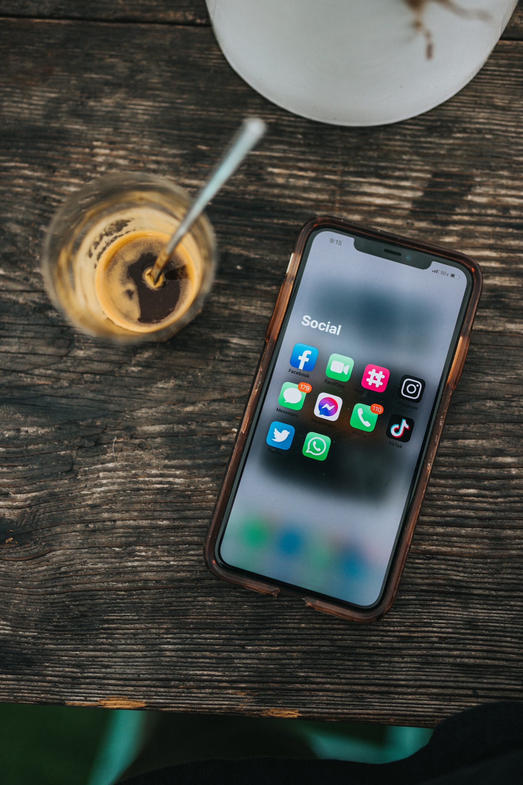
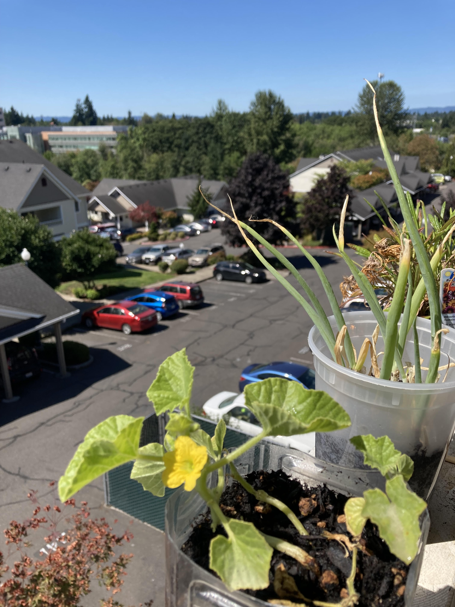
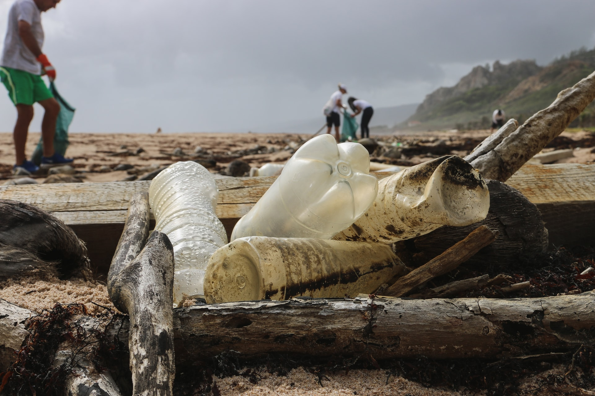
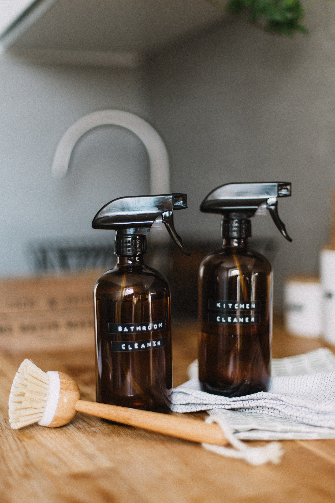

Who brought me into climate change? (Don't peek!)

Photo by Noah Buscher on Unsplash

Photo by Nathan Dumlao on Unsplash
💚💚💚💚💚💚💚💚💚💚💚💚💚💚💚💚💚💚💚💚💚💚💚💚💚💚💚💚💚💚💚💚
More: The answer is MY ENVIRONMENTAL TEACHER. She taught my class about wildfire and how it started more easily because of climate change! This makes me though “WHO IS THIS CLIMATE CHANGE THING?” “Why are they ruining our lives!?” But in the end I realized that the way we live our lives has a huge impacts on the environment as well :(
What is my first action toward climate change? (Don't peek!)

Photo by me

Photo by me
💚💚💚💚💚💚💚💚💚💚💚💚💚💚💚💚💚💚💚💚💚💚💚💚💚💚💚💚💚💚💚💚
More: The answer is sew shopping bag!! These are the pictures I took so I have done both but my first action is sew a shopping bag for my mom. Then, I started sewing a lot of stuff HAHAH
Which action I have never try before but want to? (Don't peek!)

Photo by Brian Yurasits on Unsplash

Photo by Daiga Ellaby on Unsplash